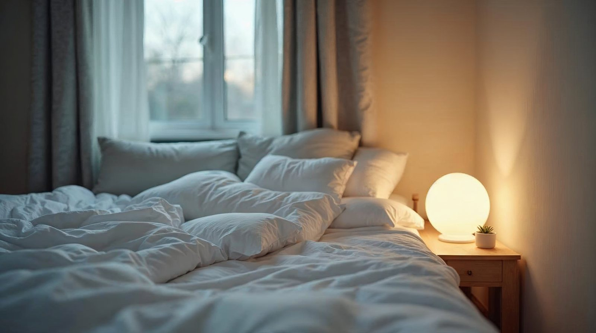
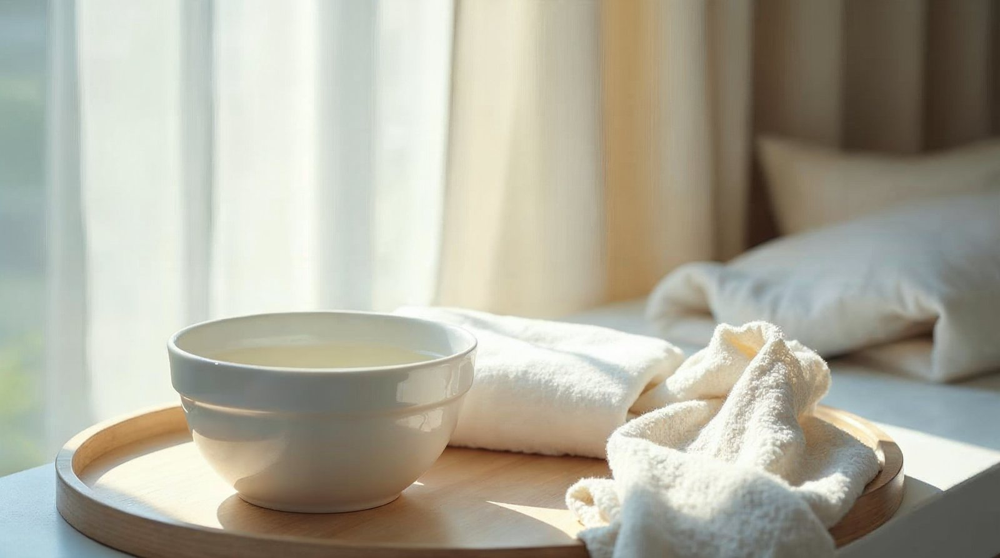

이종호 한의사 감수좋은꿈참사랑한의원 대표원장 (한의사 면허번호 19769)발행 2026-11-26 · 수정 2026-11-27
이 글의 차례
거울 앞에서 화장을 하거나 면도를 하다가 왼쪽 눈 밑이 또 파르르 떨려요. 처음엔 피곤해서 그러려니 했죠. 그런데 몇 달이 지나자 떨림이 볼로 번지고, 어느 날은 입꼬리까지 같은 쪽으로 씰룩 당겨 올라갑니다. 마주 앉은 사람이 내 얼굴을 쳐다보는 것 같아 자꾸 손으로 볼을 누르게 되고요.
이런 얘기를 들으면 저는 맥부터 짚고, 가장 먼저 떨리는 자리를 여쭤요. 같은 '떨림'이어도 두 개가 다른 얘기거든요. 눈꺼풀 한 곳만 잠깐 떨리다 마는 것과, 눈가와 볼과 입꼬리가 한쪽에서 함께 움직이는 것이요. 얼굴 한쪽이 함께 씰룩이고 몇 달째 이어진다면 반측안면경련을 떠올려 봐요.
반측안면경련은 아프지는 않지만 마음을 많이 다치게 하는 불편이에요. 사람을 만나는 자리, 사진을 찍는 순간, 발표하는 자리에서 유독 심해지니 자꾸 피하게 되죠. 그러다 보면 긴장이 더해져 떨림이 더 잦아지는 악순환에 빠지기 쉬워요.
그래서 이 글에서는 반측안면경련이 무엇인지, 흔한 눈꺼풀 떨림과는 어떻게 다른지, 신경과 진료와 함께 한의원에서는 무엇을 살피는지를 차근차근 정리해 봤어요. 떨림을 이해하는 것만으로도 마음의 짐이 조금 가벼워지실 수 있거든요.
반측안면경련은 어떤 모습으로 나타나나요?
이름 그대로 얼굴의 한쪽(반측)에 생기는 떨림(경련)입니다. 대개 아래 눈꺼풀이 파르르 떨리는 것으로 시작합니다. 처음에는 하루 몇 번 잠깐 떨리다 말지만, 시간이 지나면서 떨리는 횟수가 늘고 범위가 넓어집니다.
떨림이 번지면 눈이 저절로 찡긋 감기고, 볼이 위로 당겨지며, 입꼬리가 같은 쪽으로 끌려 올라갑니다. 심한 분은 턱 아래 목 근육까지 함께 당기기도 합니다. 떨리는 동안 눈이 감겨 앞이 잘 보이지 않아 운전이나 계단에서 불편을 호소하시기도 합니다.
특징적인 것은 늘 같은 쪽이라는 점입니다. 오늘은 왼쪽, 내일은 오른쪽으로 바뀌지 않고, 한번 시작된 쪽에서 계속 이어집니다. 긴장하거나 피곤하거나 말을 많이 할 때 심해지고, 어떤 분은 잠든 뒤에도 떨림이 이어진다고 가족에게 듣기도 합니다.
왜 얼굴 한쪽만 떨리게 될까요
얼굴 근육을 움직이는 신경은 뇌 아래쪽에서 나와 귀 앞을 지나 얼굴 한쪽으로 퍼집니다. 반측안면경련은 이 신경이 뇌에서 빠져나오는 자리 근처에서 가까이 지나는 혈관에 눌리면서, 신경이 필요 없이 신호를 내보내는 것으로 설명되는 경우가 많습니다.
혈관은 심장 박동에 맞춰 계속 뛰기 때문에, 신경을 누르는 자극이 쌓이면서 떨림이 조금씩 넓어지고 잦아진다고 이해하시면 됩니다. 나이가 들며 혈관이 길어지고 구불구불해지는 변화도 함께 거론됩니다. 드물게는 혹이나 다른 원인이 신경을 누르기도 해서 영상 검사로 확인합니다.
이 원인은 생활만으로 없앨 수 있는 것이 아닙니다. 다만 같은 신경 상태에서도 잠이 부족하거나, 눈을 혹사하거나, 긴장이 높은 날에는 떨림이 훨씬 잦아집니다. 원인 진단은 신경과에서 받고, 떨림을 부추기는 생활 요인은 함께 줄여 나가는 두 갈래 접근이 필요한 이유입니다.
흔한 눈꺼풀 떨림과는 무엇이 다른가요
눈 밑이 며칠 파르르 떨리는 눈꺼풀 떨림은 아주 흔합니다. 잠이 부족하거나 커피를 많이 마신 주에 잘 생기고, 대개 눈꺼풀 한 곳에만 머물다 몇 날, 몇 주 사이에 저절로 가라앉습니다. 볼이나 입꼬리까지 함께 움직이지는 않습니다.
반측안면경련은 눈꺼풀에서 시작했더라도 몇 달에 걸쳐 볼과 입꼬리로 번지고, 쉬어도 잘 사라지지 않습니다. 떨리는 자리가 넓어지는지, 몇 달째 이어지는지가 둘을 나누는 중요한 실마리입니다.
양쪽 눈이 함께 꽉 감기며 눈을 뜨기 힘든 경우는 눈꺼풀 연축이라고 해서 또 다르게 봅니다. 아이나 청소년이 눈을 깜빡이고 얼굴을 찡그리는 것은 틱일 수 있고, 예전에 안면마비를 앓은 뒤 입을 움직이면 눈이 같이 감기는 것은 회복 과정의 연동 움직임일 수 있습니다.
진단과 치료는 어디서 받나요
얼굴 한쪽이 함께 떨리는 것이 몇 주 넘게 이어진다면 신경과 진료를 먼저 권합니다. 신경과에서는 떨림의 모양을 보고, 필요하면 뇌 MRI 같은 영상 검사로 신경을 누르는 원인을 확인합니다. 이 과정이 있어야 이후 방향을 안심하고 정할 수 있습니다.
병원에서는 떨리는 근육에 주사를 놓아 움직임을 줄이는 방법, 신경을 누르는 혈관을 떼어 놓는 수술 같은 방법을 상황에 맞춰 상의합니다. 어떤 방법이 맞는지는 떨림의 정도, 생활의 불편, 건강 상태에 따라 담당 선생님과 함께 정하시면 됩니다.
한의원 진료는 이런 병원 진료를 대신하는 것이 아닙니다. 신경과에서 원인을 확인하고 치료를 이어 가시는 동안, 떨림을 키우는 잠과 긴장, 눈의 피로, 목과 어깨의 굳음을 함께 살피는 자리라고 생각해 주시면 됩니다.

떨림이 잦아지는 때와 잠잠한 때
떨림을 오래 겪으신 분들은 스스로 패턴을 알고 계신 경우가 많습니다. 회의에서 발표를 앞둔 오전, 밤을 새운 다음 날, 모니터를 오래 본 오후, 사람들 앞에서 크게 웃은 직후에 떨림이 몰려온다고 말씀하십니다.
반대로 따뜻한 물로 씻고 난 뒤, 편한 사람과 조용히 이야기할 때, 푹 잔 주말 아침에는 떨림이 잠잠했다고 하십니다. 이 차이를 알아 두면 떨림을 막연한 공포가 아니라 조절해 볼 수 있는 대상으로 바라보게 됩니다.
추운 바깥에 오래 있다가 들어온 날에도 얼굴 근육이 굳어 떨림이 잦아진다고 하시는 분이 있습니다. 겨울에는 목도리로 얼굴 아래쪽과 목을 감싸 찬바람을 덜 맞게 해 보세요. 작은 차이지만 몸이 덜 움츠러드는 데 도움이 될 수 있습니다.
떨림이 잦은 시기와 잠잠한 시기는 몇 주, 몇 달 단위로 오가기도 합니다. 잠잠하던 떨림이 다시 늘었다고 해서 모든 것이 처음으로 돌아간 것은 아닙니다. 최근 몇 주의 잠과 일, 마음의 무게를 돌아보면 늘어난 까닭이 보이는 경우가 많습니다.
운전을 자주 하시는 분이라면 떨림이 잦은 날에는 장거리 운전을 줄이고, 눈이 감기는 떨림이 오면 안전한 곳에 잠시 멈춰 쉬어 가시길 권합니다. 계단을 내려갈 때도 난간을 잡는 습관을 들여 두면 마음이 한결 편합니다.
가족과 주변에서 알아 두면 좋은 것
떨림이 있는 분께 "또 떨린다"라고 말해 주면 본인은 더 긴장하게 됩니다. 가족이라면 떨림을 짚어 말하기보다 자연스럽게 대화를 이어 가 주시는 쪽이 도움이 됩니다. 영상 기록이 필요할 때만 미리 약속해 두고 찍어 주시면 됩니다.
잠든 뒤에도 얼굴이 떨리는지는 본인이 알기 어렵습니다. 함께 지내는 가족이 밤에 떨림을 본 적이 있다면 진료 때 함께 알려 주세요. 신경과 진료에서도 쓸모 있는 정보가 됩니다.
떨림 때문에 모임이나 사진 찍는 자리를 피하고 기분까지 가라앉는다면, 그 마음도 진료 때 함께 말씀해 주세요. 얼굴의 떨림과 마음의 긴장은 서로를 키우기 쉬워서, 둘을 같이 살피는 것이 하루를 편하게 하는 데 도움이 됩니다.
먼저 이렇게 여쭙니다
처음 오시면 저는 대략 이런 순서로 여쭙니다. 미리 떠올려 오시면 이야기가 수월해집니다.
- 떨림은 언제, 얼굴의 어느 자리에서 처음 시작됐나요?
- 지금은 눈가, 볼, 입꼬리, 턱 아래 중 어디까지 함께 움직이나요?
- 하루에 몇 번쯤, 한 번에 얼마나 이어지나요?
- 잠이 부족하거나 긴장하거나 말을 많이 한 날 더 심해지나요?
- 신경과 진료나 영상 검사, 주사 치료를 받아 보셨나요?
- 커피, 술, 화면 보는 시간은 하루 어느 정도인가요?
떨림 때문에 사람 만나는 일을 피하게 되었는지, 잠들기 전에도 떨림이 신경 쓰여 잠이 얕아졌는지도 함께 여쭙니다. 떨림 자체만큼 그 떨림이 하루를 얼마나 흔드는지가 중요하기 때문입니다.
일상에서 먼저 해 볼 수 있는 것
생활 관리로 원인을 없앨 수는 없지만, 떨림이 잦아지는 조건을 줄이는 데에는 도움이 될 수 있습니다. 내게 맞는 것을 한두 가지 골라 꾸준히 해 보세요.
- 잠드는 시각을 일정하게 맞추고, 평소보다 30분 일찍 눕기
- 커피와 에너지 음료는 오전에 한 잔 정도로 줄여 보기
- 화면을 50분 보면 5분은 먼 곳을 보며 눈 쉬게 하기
- 뜨겁지 않은 따뜻한 수건으로 눈가와 볼을 5분쯤 덮어 근육 풀어 주기
- 떨리는 쪽 볼을 세게 문지르거나 꾹 누르지 않기
떨림이 올 때 억지로 참으려고 얼굴에 힘을 주면 오히려 더 당기는 느낌이 들 수 있습니다. 떨림이 오면 숨을 길게 내쉬며 어깨를 내리고, 지나가기를 기다리는 쪽이 마음에도 덜 부담이 됩니다.
사람을 만날 때 떨림이 신경 쓰인다면, 가까운 사람에게는 미리 "얼굴이 가끔 떨리는 증상이 있어요"라고 말해 두는 것도 방법입니다. 숨기려고 애쓰는 긴장이 줄어들면 떨림을 대하는 마음도 한결 편해질 수 있습니다.
목과 어깨가 굳어 있는 분은 하루 두세 번 어깨를 천천히 뒤로 돌리고, 고개를 좌우로 기울여 목 옆을 늘려 주세요. 턱에 힘을 주고 이를 꽉 무는 습관이 있다면, 혀를 입천장에 가볍게 대고 윗니와 아랫니를 살짝 떼어 두는 연습을 해 보시길 권합니다.

한의원에서 함께 살필 수 있는 경우
- 신경과 진료를 받으면서 잠과 긴장, 눈의 피로를 함께 살피고 싶은 경우
- 떨리는 쪽 얼굴과 뒷목, 턱 주변이 늘 뻣뻣하게 느껴지는 경우
- 떨림이 신경 쓰여 잠이 얕아지고 쉽게 피곤해진 경우
- 주사 치료 사이에 생활 관리를 함께 상의하고 싶은 경우
좋은꿈참사랑한의원에 오시면 모든 분의 맥을 먼저 짚고, 필요하면 턱과 뒷목, 어깨 근육을 만져 보며 굳은 자리를 찾습니다. 잠과 소화, 손발의 온도처럼 몸 전체의 흐름도 함께 여쭙니다.
진찰한 내용을 바탕으로 침, 온열 관리, 한약 상담 가운데 지금 상태에 맞는 것을 정합니다. 떨리는 얼굴 부위를 자극하는 것은 신중하게 정하고, 목과 어깨처럼 긴장이 모이는 자리를 함께 살피는 경우가 많습니다. 한약은 드시는 약을 확인한 뒤 신중하게 정합니다.
신경과에서 받는 치료는 그대로 이어 가시면 됩니다. 주사를 맞은 날이나 그 직후에는 얼굴 부위 진료를 어떻게 할지 미리 말씀해 주시면 그에 맞춰 순서를 조정합니다. 임신 중이시거나 계획 중이시라면 먼저 알려 주세요.
이렇게 기록해 오시면 상담이 쉬워집니다
반측안면경련은 진료실에서 떨림이 멈춰 있는 경우가 많습니다. 집에서 남긴 기록과 영상이 그 빈자리를 채워 줍니다. 2주 정도 간단히 적어 보세요.
- 하루 떨린 횟수를 대략 '적음, 보통, 많음'으로 표시
- 떨림이 번진 범위(눈가만, 볼까지, 입꼬리까지)
- 전날 잔 시간과 커피를 마신 잔 수
- 긴장했거나 말을 많이 한 날 표시
- 떨리는 순간의 짧은 영상 한두 개
기록을 나란히 놓고 보면 떨림이 잦았던 날과 잠, 커피, 긴장 사이의 연결이 보이기 시작합니다. 그 연결 하나를 줄이는 것부터가 다음 걸음이 됩니다.
신경과에서 주사 치료를 받고 계신다면 맞은 날짜도 기록에 함께 적어 주세요. 주사 뒤 떨림이 줄어드는 시기와 다시 늘어나는 시기를 알면, 그 사이에 잠과 긴장을 어떻게 챙길지 미리 계획하기가 쉬워집니다. 다음 진료 날짜를 정할 때도 기준이 됩니다.
기록을 적는 일이 또 하나의 부담이 되어서는 안 됩니다. 달력 한 칸에 동그라미와 세모만 그려도 충분합니다. 빠진 날이 있어도 괜찮으니, 쉽게 이어 갈 수 있는 방식으로 시작해 보세요.
떨림과 함께 지내는 마음
얼굴이 떨린다는 건 생각보다 많은 용기를 빼앗아 가요. 거울을 덜 보게 되고, 웃을 때도 손으로 입을 가리게 되죠. 그 마음을 혼자 견디지 마시고 진료실에서 편하게 꺼내 놓으셨으면 해요.
떨림은 의지가 약해서 생기는 게 아니에요. 참으려 애쓴다고 멈추는 것도 아니고요. 오히려 참으려고 힘을 줄수록 얼굴은 더 긴장하기 쉽거든요. 스스로를 탓하는 마음부터 내려놓으셔도 괜찮아요.
원인은 신경과에서 확인하고, 떨림을 부추기는 잠과 긴장은 생활에서 함께 줄여 가면 돼요. 몸의 긴장을 살피는 건 저한테 맡기시고, 이번 주엔 하나만 골라 주세요. 잠드는 시각 30분 앞당기기예요.
딴 건 하던 대로 하셔도 돼요. 떨림 기록이 조금씩 모이면 그걸 같이 펼쳐 봐요. 궁금한 건 언제든 편하게 물어보세요.
이런 증상은 먼저 확인이 필요합니다
- 갑자기 얼굴 한쪽이 처지거나, 말이 어눌해지거나, 한쪽 팔다리에 힘이 빠지는 경우
- 갑자기 시작된 아주 심한 두통이 있거나, 한쪽 귀가 갑자기 들리지 않는 경우
이런 신호가 있으면 한의원보다 가까운 병원이나 응급실을 먼저 찾으세요.
함께 읽으면 좋은 글
- 눈 밑이나 눈꺼풀이 며칠째 파르르 떨리는 눈꺼풀 떨림은 어떻게 살피나요?
- 얼굴 근육이 파르르 떨릴 때는 어떤 점을 먼저 확인하나요?
- 스트레스를 받으면 뒷목이 당기고 머리가 아픈 긴장성 두통은 어떻게 살피나요?
- 턱에서 소리가 나고 입이 잘 안 벌어지는 턱관절 장애는 어떻게 살피나요?
- 눈이 뻑뻑하고 모래가 들어간 듯 따갑거나 쉽게 피로한 안구건조증은 어떻게 살피나요?
여쭙는 것
- 떨림은 언제, 얼굴의 어느 자리에서 처음 시작됐나요?
- 지금은 눈가, 볼, 입꼬리, 턱 아래 중 어디까지 함께 움직이나요?
- 하루에 몇 번쯤, 한 번에 얼마나 이어지나요?
생활에서 해 볼 것
- 잠드는 시각을 일정하게 맞추고, 평소보다 30분 일찍 눕기
- 커피와 에너지 음료는 오전에 한 잔 정도로 줄여 보기
- 화면을 50분 보면 5분은 먼 곳을 보며 눈 쉬게 하기
한의원에서 함께 살필 것
- 신경과 진료를 받으면서 잠과 긴장, 눈의 피로를 함께 살피고 싶은 경우
- 떨리는 쪽 얼굴과 뒷목, 턱 주변이 늘 뻣뻣하게 느껴지는 경우
- 떨림이 신경 쓰여 잠이 얕아지고 쉽게 피곤해진 경우
먼저 확인이 필요한 신호
- 갑자기 얼굴 한쪽이 처지거나, 말이 어눌해지거나, 한쪽 팔다리에 힘이 빠지는 경우
- 갑자기 시작된 아주 심한 두통이 있거나, 한쪽 귀가 갑자기 들리지 않는 경우
한눈에 보는 표
| 구분 | 핵심 |
|---|---|
| 여쭙는 것 | 떨림은 언제, 얼굴의 어느 자리에서 처음 시작됐나요? 지금은 눈가, 볼, 입꼬리, 턱 아래 중 어디까지 함께 움직이나요? |
| 생활에서 해 볼 것 | 잠드는 시각을 일정하게 맞추고, 평소보다 30분 일찍 눕기 커피와 에너지 음료는 오전에 한 잔 정도로 줄여 보기 |
| 한의원에서 함께 살필 것 | 신경과 진료를 받으면서 잠과 긴장, 눈의 피로를 함께 살피고 싶은 경우 떨리는 쪽 얼굴과 뒷목, 턱 주변이 늘 뻣뻣하게 느껴지는 경우 |
| 먼저 확인이 필요한 신호 | 갑자기 얼굴 한쪽이 처지거나, 말이 어눌해지거나, 한쪽 팔다리에 힘이 빠지는 경우 갑자기 시작된 아주 심한 두통이 있거나, 한쪽 귀가 갑자기 들리지 않는 경우 |
자주 묻는 질문
눈 밑 떨림이 한 달째 이어지는데 반측안면경련인가요?
떨림이 눈꺼풀 한 곳에만 머무는지, 볼과 입꼬리까지 번지는지를 먼저 봅니다. 번지거나 몇 달째 이어진다면 신경과 진료로 원인을 확인해 보시길 권합니다.
신경과에서 주사 치료를 받고 있는데 한의원 진료를 같이 받아도 되나요?
함께 받으실 수 있습니다. 주사 맞은 날짜와 부위를 알려 주시면 얼굴 부위 진료 순서를 그에 맞춰 조정하고, 목과 어깨, 잠과 긴장을 함께 살핍니다.
떨릴 때 얼굴을 세게 누르면 멈추지 않나요?
잠깐 덜 느껴질 수는 있지만 세게 문지르거나 누르는 습관은 피부와 근육에 부담이 될 수 있습니다. 따뜻한 수건으로 덮고 숨을 길게 내쉬며 지나가기를 기다리는 쪽을 권합니다.
커피를 끊어야 하나요?
한꺼번에 끊기보다 오전 한 잔 정도로 줄여 보고, 떨림 기록과 함께 변화를 살펴보세요. 사람마다 영향이 달라서 기록이 가장 좋은 길잡이가 됩니다.
진료실에서는 떨림이 안 나타나면 어떻게 하나요?
흔한 일입니다. 떨리는 순간을 휴대폰으로 짧게 찍어 오시면 모양과 번지는 범위를 함께 볼 수 있어 상담에 큰 도움이 됩니다.
좋은꿈참사랑한의원은 재진 때 지난번 이야기부터 이어서 여쭙니다. 진료시간과 예약은 오시는 길에서 확인하세요.
어디서 상담받을 수 있나요?
좋은꿈참사랑한의원은 서울 동작구 만양로2길 2 신성빌딩 3층·5층(서울 동작구 상도동, 7호선 상도역 3번 출구 근처)에 있습니다. 한의사 3명(이종호 대표원장, 조영기 수석진료원장, 정원영 진료원장)이 진료합니다. 진료시간은 평일 09:30~20:00(점심 13:00~14:00), 토·일·공휴일 09:30~15:00이며, 방문 전 전화로 확인을 권합니다. 예약은 네이버 예약, 카카오톡 상담, 전화 02-815-7510로 받습니다.
이 글은 일반적인 건강 정보이며 개인의 진단이나 치료를 대신하지 않습니다. 증상이 있거나 복용 중인 약이 있다면 진료를 통해 확인하세요. 치료 효과는 개인마다 다를 수 있습니다.
작성 기준: 일반적으로 알려져 있는 건강 정보를 참고해 정리했습니다(대표원장 감수). 증상 기록은 1~2주 동안 하루 1회, 비슷한 시간에 적어 오시면 지난 상태와 비교하기 쉽습니다.